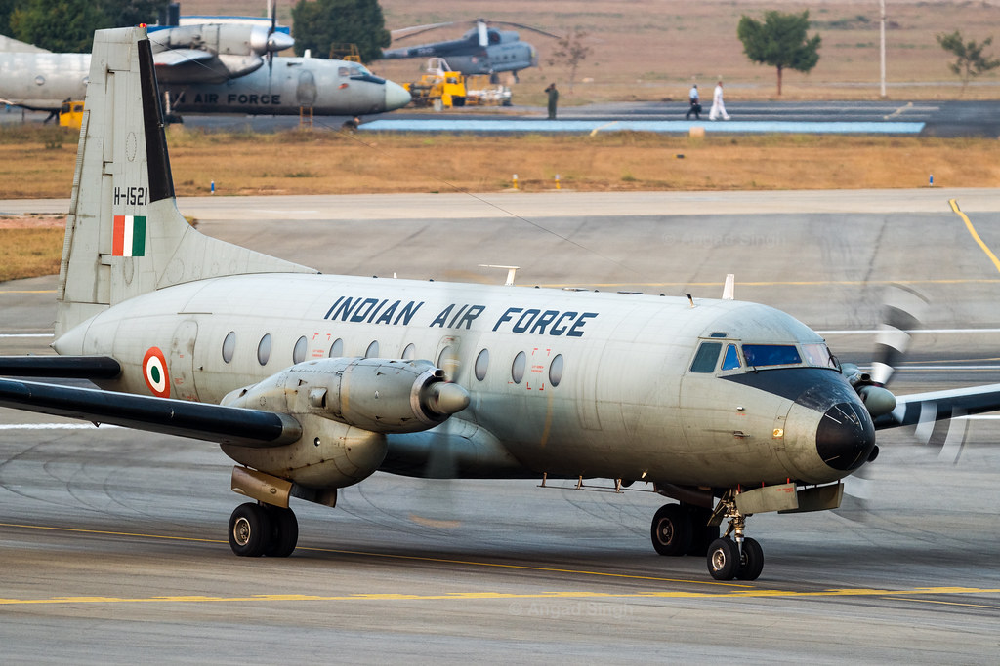

Service History
- Entry into service :
The Avro 748 entered service with the Indian Air Force in 1961. HAL began licensed production
of the aircraft in India to meet the demand for a reliable medium-lift transport aircraft.
- Mjaor Operation :
The Avro 748 was actively used during the 1971 Indo-Pak War or troop transport, medical evacuation,
and logistics support. It has also been widely used in peacetime roles, including VIP transport, cargo transport, and training.
- Ongoing Service :
Although gradually phased out from frontline service, some HAL-748 aircraft remain operational within
the IAF and other government agencies for secondary transport and training roles, with limited active use continuing to the present day.
Technical Specifications
- Weight : Approximately 12 tons (empty weight).
- Engine : Equipped with two Rolls-Royce Dart turboprop engines, each providing 2,100 horsepower.
- Speed : Capable of speeds up to 430 km/h (267 mph).
- Armament :
The Avro 748 is unarmed, as it is primarily a transport and utility aircraft.
- Capacity: Typically able to carry up to 6,600 kg of cargo or 40 fully equipped troops.
- Notable Feature : The Avro 748’s sturdy design and ability to operate from short, semi-prepared airstrips made it well-suited for missions in challenging terrains and remote areas.
- Range : Operational range of around 1,800 km, extendable with additional fuel.
- Crew : Operated by a crew of two to three, including the pilot, co-pilot, and a loadmaster if needed.
Historical Significance
The Avro 748 has been a workhorse in the Indian Air Force, particularly suited to medium-lift transport missions. It was India’s first indigenously produced military transport aircraft,
marking a milestone in Indian aviation manufacturing. The aircraft’s reliability and versatility made it an essential asset in both military and civil roles, supporting remote operations
and providing a lifeline to regions that lacked reliable infrastructure.
Notable Missions
- 1971 Indo-Pak War: The Avro 748 was used for a variety of support roles, including troop transport, supply drops, and medical evacuation. Its ability to operate
from shorter airstrips allowed it to access remote bases, delivering vital supplies to frontline areas.
- Routine Transport and VIP Missions: The Avro 748 has frequently served in VIP transport missions for government officials and high-ranking military personnel.
It has also supported routine supply and personnel transport missions across India.
- Training and Reconnaissance: The aircraft has been utilized for crew training and, in certain adaptations, reconnaissance missions. Its stability and ease of control made it an ideal platform for training new pilots.
- Humanitarian Assistance and Disaster Relief: The Avro 748 has played an important role in disaster relief efforts, delivering food, medicine, and other essential supplies to affected areas during natural disasters.